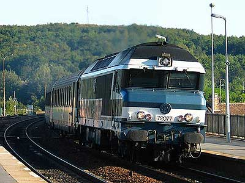

Locomotives Diesel
L'éradication de la traction vapeur passait par de grands chantiers d'électrification. Mais bon nombre de lignes ne pouvaient bénéficier de si coûteux travaux. C'est le point de départ de la diésélisation massive du parc de la SNCF.
Les études menées par les compagnies pendant la première moitié du vingtième siècle sur les engins thermiques restaient cependant décevantes. Le contexte de la seconde guerre mondiale permit d'importants progrès techniques et la SNCF entreprit les différentes voies qui s'offraient à elle.
Comme en traction électrique, l'essor des technologies fut très rapide à partir des années 50. Cette décénie vit des projets aux résultats peu satisfaisants à cause de la puissance limitée des moteurs qui imposait des schémas de machines lourdes à 6 essieux et bimoteurs. Ce qui impliquait des soucis de synchronisation, un coût élevé de maintenance et une fiabilité insuffisante. Les années 60 virent les progrès les plus significatifs avec l'arrivée des moteurs industriels de grande puissance.
Mais, contrairement à la traction électrique, cet age d'or s'est achevé sans suite en 1969. Ainsi la dernière machine Diesel neuve acquise par la SNCF fut longtemps la BB 67632, mise en service en 1975. Les nouveautés se limitant aux automoteurs et à la location de machines Vossloh.
L'avenir du parc Diesel semble aujourd'hui limité au fret avec la commande des BB 4-75000 à moteur MTU et chaîne de traction asynchrone coproduites par Siemens et Alstom, et une main-mise des automoteurs sur les services voyageurs. En attendant ces prochains bouleversements, le parc actuel bat des records de longévités grâce à des opérations de rénovation.
La première génération
CC 65000
CC 65500
Les unifiées
BB 63000 / 63500 / 64600
BB 64700 / TBB 64800
Les "66000"
BB 66000 / 69000
BB 66400 / 69400
BB 66600
BB 66700
Les "67000"
BB 67000
BB 67200
BB 67300
BB 67400
La nouvelle génération
BB 60000
BB 61000
BB 75000 / 75100 / 75300
BB 75400

La CC 72077 passe à Longueville 21 Septembre 2003